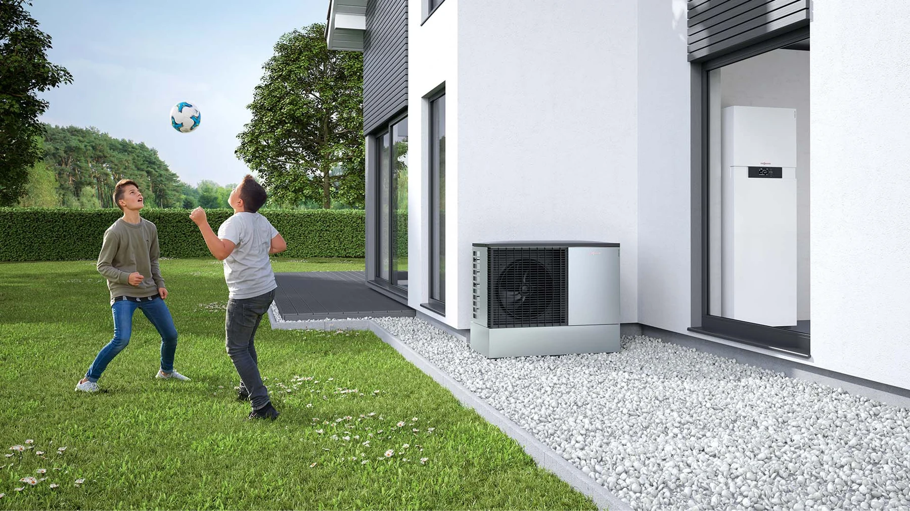

INKOM / TOPLOTNE PUMPE
Toplota iz okoline.
Komfor u prostoru.
Toplotne pumpe za grejanje, hlađenje i pripremu tople vode, u skladu sa konfiguracijom sistema.
Istražite kategorijuPREGLED / TOPLOTNE PUMPE
Izbor počinje od objekta.
Toplotni gubici, izolacija i postojeća grejna tela određuju potrebnu snagu i radne temperature. Važna je usklađenost celog sistema, od izvora toplote do regulacije.
01 / IZVOR ENERGIJE
Izvor energije
- Vazduh
- Zemlja
- Podzemna voda
02 / NAMENA
Namena
- Grejanje
- Hlađenje
- Topla voda
03 / PRIPREMA
Podaci za izbor
- Površina
- Izolacija
- Postojeći razvod
- Topla voda